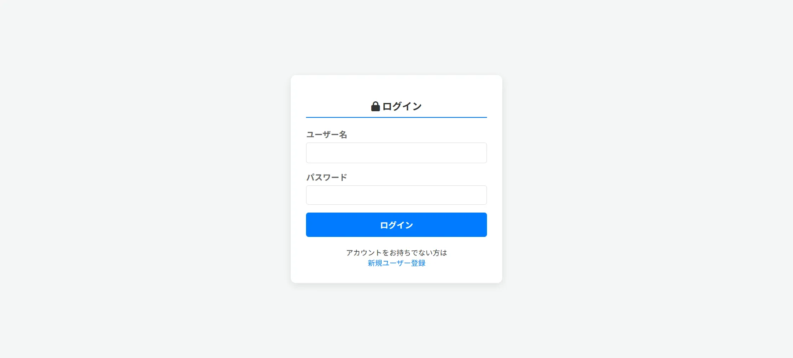
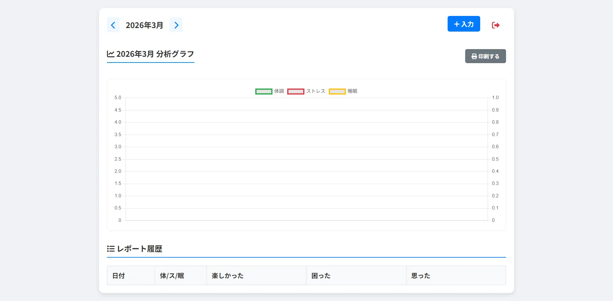
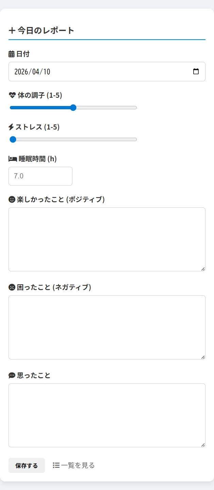
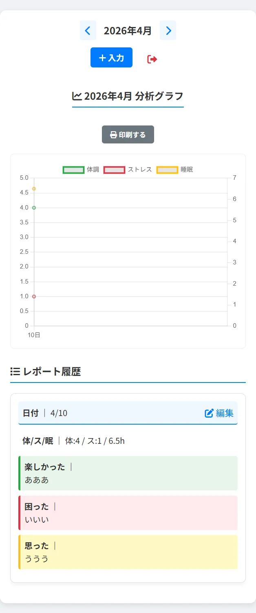

ヒアリング / デザイン / コーディング
Figma / VS Code (HTML / CSS / JS / PHP)
1週間
- システム名「心身レポート」。
- 「心のノイズを可視化する」を掲げ、日々の体調とメンタルの相関関係をシンプルに記録。
- PHPとSQLを用いた動的なデータ保存により、自身の状態を客観的に振り返り、自己管理（セルフケア）の質を向上させるツールを提供します。
日々のストレスや体調の変化を感じつつも、言語化や記録が長続きしない人。
メンタルヘルスに関心があり、特定の出来事と体調の因果関係を分析したい人。
手書きのノートよりも、外出先からスマートフォンで手軽にログを残したい層。
セルフモニタリングの習慣化：最小限の入力（数値選択と短文）で、負担なく毎日続けられる操作感を提供。
データの資産化：サーバー上に蓄積された過去のレポートを一覧表示することで、自分の「調子の波」を把握し、早期の休息や対策に繋げる。
直感的な入力フロー：ログイン後、すぐに「今日のレポート」画面が表示され、迷わず入力を開始できる動線を設計。
視認性の高い一覧表示：登録されたデータを日付順にリスト化。過去の「ポジティブ・ネガティブ」な出来事をセットで見返すことで、思考パターンの気づきを促す。
マルチデバイス対応：外出先（スマホ）でも、自宅のPCでも、場所を選ばず入力・閲覧できるレスポンシブな設計を採用。
清潔感があり、心を落ち着かせるヒーリングカラー（淡いブルーやグリーン系）を基調。
テキスト入力欄には十分な余白を持たせ、自分の感情をゆったりと書き込める「デジタルな日記帳」のような落ち着いたレイアウトを追求。
下に添付した画像は、PCとスマホのデザイン完成稿です。



